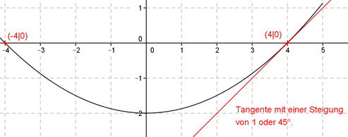

Aufgabe 2 Der Graph einer ganzrationalen Funktion 2. Grades schneidet die x-Achse bei 4 und -4. Bei x = 4 schneidet er sie unter einem Winkel von 45°. Wie lautet seine Funktionsgleichung?  Allgemeine Form einer ganzrationalen Funktion 2. Grades: f(x) = ax² + bx + c f’(x) = 2ax + b f’’(x) = 2a 3 Bedingungen: 1. Schneidet die x-Achse bei 4 bedeutet: f(4) = 0 --> a * 4² + b * 4 + c --> 16a + 4b + c = 0 I 2. Schneidet die x-Achse bei -4 bedeutet: f(-4) = 0 --> a * (-4)² + b * (-4) = 0 --> 16a - 4b + c = 0 II 3. Bei x = 4 schneidet er sie unter einem Winkel von 45° bedeutet: tan 45° = 1 --> Steigung der Tangente (erste Ableitung) = 1 f’(4) = 1 --> 2a * (4) + b = 1 --> 8a + b = 1 III I * (-1) + II -16a - 4b - c = 0 16a - 4b + c = 0 ------------------ - 8b = 0 |:(-8) b = 0 In III eingesetzt: 8a + 0 = 1 :8 a = 0,125 In II eingesetzt: 16 * 0,125 + 4 * 0 + c = 0 2 + c = 0 |-2 c = -2 Gesuchte Funktionsgleichung: f(x) = 0,125x2 - 2